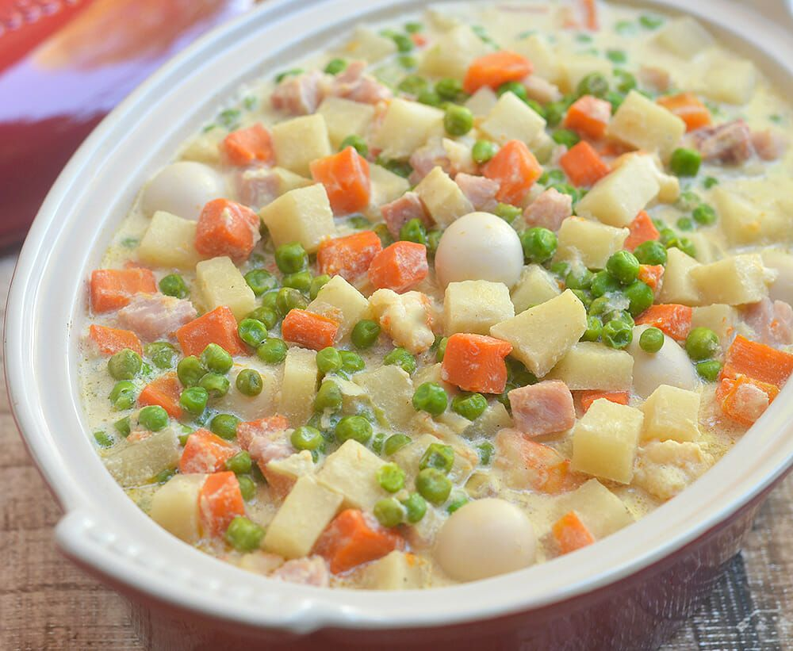

Home

Sipo-Egg
Ingredients
- 12 pieces quail eggs, hard-boiled and peeled
- 1 tablespoon butter
- 1 onion, peeled and chopped
- 2 cloves garlic, peeled and minced
- 1 tablespoon fish sauce
- 2 large carrots, peeled and cut into 1/2-inch cubes
- 1 large singkamas (jicama), peeled and cut into 1/2-inch cubes
- 1/2 cup water or chicken stock
- 1 cup frozen sweet peas, thawed
- 1 cup table cream (all-purpose cream)
- salt and pepper to taste
Procedure
- In a wide pan over medium heat, heat butter until melted.
- Add onions and garlic and cook, stirring regularly, until softened.
- Add fish sauce and continue to cook for about 1 minute.
- Add carrots and jicama and stir to combine.
- Add water or stock and bring to a boil. Continue to cook for
about 7 to 10 minutes or until vegetables are tender yet crisp
and liquid is reduced.
- Add green peas and stir to combine!
- Add cream and quail eggs. Season with salt and pepper to taste.
- Continue to simmer for about 2 to 3 minutes or until green
peas and eggs are heated through, vegetables are tender-crisp,
and sauce is slightly thickened. Serve hot.